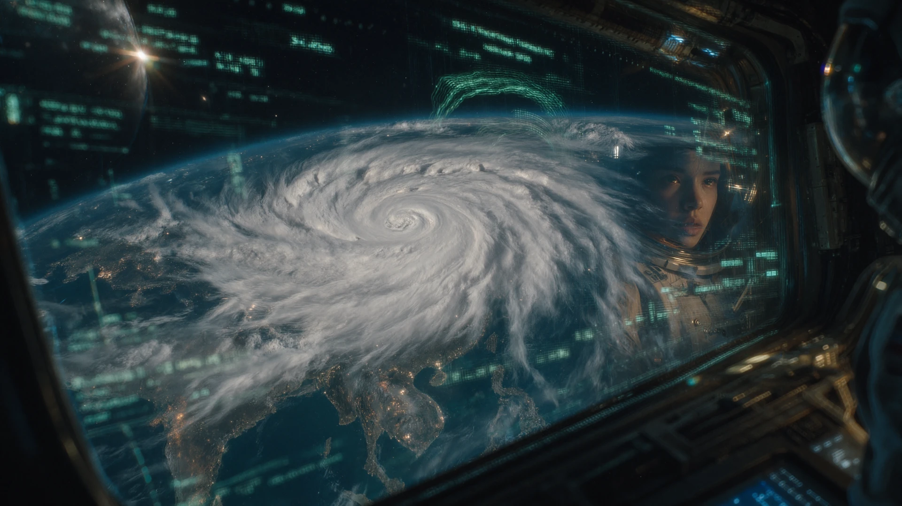

MOSS + Krea2 打造专属 MJ 风格
用 MOSS 生成初稿，交给 Krea2 二次采样，探索接近 Midjourney 的电影感光影与质感。
在 RunningHub 查看 ↗

从提示词到成图
- 输入提示词
用文字指定主体、构图与光线。需要借用参考图的空间结构时，可开启深度参考。
- MOSS 初采
生成第一版画面，确定人物、构图与整体光影。
- Krea2 二次采样
沿用提示词，在 MOSS 初稿基础上进一步调整材质与电影感。
用 MOSS 生成初稿，交给 Krea2 二次采样，探索接近 Midjourney 的电影感光影与质感。
在 RunningHub 查看 ↗

用文字指定主体、构图与光线。需要借用参考图的空间结构时，可开启深度参考。
生成第一版画面，确定人物、构图与整体光影。
沿用提示词，在 MOSS 初稿基础上进一步调整材质与电影感。